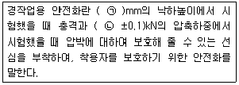
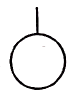
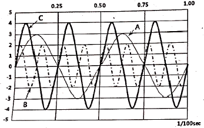
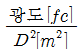
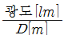
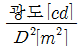
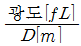
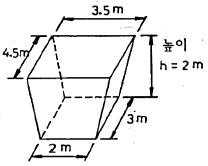
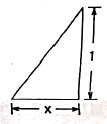

건설안전산업기사 (2020-06-06 기출문제)
1과목: 산업안전관리론
1. 심리검사의 특징 중 “검사의 관리를 위한 조건과 절차의 일관성과 통일성”을 의미하는 것은?
- 규준
- 표준화
- 객관성
- 신뢰성
(정답률: 80%)

2. 산업 재해의 발생 유형으로 볼 수 없는 것은?
- 지그재그형
- 집중형
- 연쇄형
- 복합형
(정답률: 83%)
3. 산업재해 예방의 4원칙 중 “재해발생에는 반드시 원인이 있다.”라는 원칙은?
- 대책 선정의 원칙
- 원인 계기의 원칙
- 손실 우연의 원칙
- 예방 가능의 원칙
(정답률: 88%)
4. 기계ㆍ기구 또는 설비의 신설, 변경 또는 고장 수리 등 부정기적인 점검을 말하며, 기술적 책임자가 시행하는 점검은?
- 정기 점검
- 수시 점검
- 특별 점검
- 임시 점검
(정답률: 72%)
5. 산업안전보건법령상 근로자 안전ㆍ보건교육 중 채용 시의 교육 및 작업내용 변경 시의 교육 사항으로 옳은 것은?
- 물질안전보건자료에 관한 사항
- 건강증진 및 질병 예방에 관한 사항
- 유해ㆍ위험 작업환경 관리에 관한 사항
- 표준안전작업방법 및 지도 요령에 관한 사항
(정답률: 56%)
6. 상시 근로자수가 75명인 사업장에서 1일 8시간씩 연간 320일을 작업하는 동안에 4건의 재해가 발생하였다면 이 사업장의 도수율은 약 얼마인가?
- 17.68
- 19.67
- 20.83
- 22.83
(정답률: 63%)
7. 위험예지훈련 기초 4라운드(4R)에서 라운드별 내용이 바르게 연결된 것은?
- 1라운드:현상파악
- 2라운드:대책수립
- 3라운드:목표설정
- 4라운드:본질추구
(정답률: 80%)
8. O.J.T(On the Job Training) 교육의 장점과 가장 거리가 먼 것은?
- 훈련에만 전념할 수 있다.
- 직장의 실정에 맞게 실제적 훈련이 가능하다.
- 개개인의 업무능력에 적합하고 자세한 교육이 가능하다.
- 교육을 통하여 상사와 부하간의 의사소통과 신뢰감이 깊게 된다.
(정답률: 74%)
9. 일반적으로 사업장에서 안전관리조직을 구성할 때 고려할 사항과 가장 거리가 먼 것은?
- 조직 구성원의 책임과 권한을 명확하게 한다.
- 회사의 특성과 규모에 부합되게 조직되어야 한다.
- 생산조직과는 동떨어진 독특한 조직이 되도록 하여 효율성을 높인다.
- 조직의 기능이 충분히 발휘될 수 있는 제도적 체계가 갖추어져야 한다.
(정답률: 87%)
10. 다음 중 매슬로우(Maslow)가 제창한 인간의 욕구 5단계 이론을 단계별로 옳게 나열한 것은?
- 생리적 욕구 → 안전 욕구→ 사회적 욕구 → 존경의 욕구 → 자아실현의 욕구
- 안전 욕구 → 생리적 욕구 → 사회적 욕구 → 존경의 욕구 → 자아실현의 욕구
- 사회적 욕구 → 생리적 욕구 → 안전 욕구 → 존경의 욕구 → 자아실현의 욕구
- 사회적 욕구 → 안전 욕구 → 생리적 욕구 → 존경의 욕구 → 자아실현의 욕구
(정답률: 82%)
11. 보호구 안전인증 고시에 따른 안전화의 정의 중 ( )안에 알맞은 것은?

- ㉠ 500, ㉡ 10.0
- ㉠ 250, ㉡ 10.0
- ㉠ 500, ㉡ 4.4
- ㉠ 250, ㉡ 4.4
(정답률: 70%)
12. 조직이 리더에게 부여하는 권한으로 볼 수 없는 것은?
- 보상적 권한
- 강압적 권한
- 합법적 권한
- 위임된 권한
(정답률: 67%)
13. 테크니컬 스킬즈(technical skills)에 관한 설명으로 옳은 것은?
- 모럴(morale)을 앙양시키는 능력
- 인간을 사물에게 적응시키는 능력
- 사물을 인간에게 유리하게 처리하는 능력
- 인간과 인간의 의사소통을 원활히 처리하는 능력
(정답률: 69%)
14. 산업안전보건법령상 특별교육 대상 작업별 교육 작업 기준으로 틀린 것은?
- 전압이 75V 이상인 정전 및 활선작업
- 굴착면의 높이가 2m 이상이 되는 암석의 굴착작업
- 동력에 의하여 작동되는 프레스기계를 3대이상 보유한 사업장에서 해당 기계로 하는 작업
- 1톤 미만의 크레인 또는 호이스트를 5대 이상 보유한 사업장에서 해당 기계로 하는 작업
(정답률: 65%)
15. 재해의 원인 분석법 중 사고의 유형, 기인물 등 분류 항목을 큰 순서대로 도표화하여 문제나 목표의 이해가 편리한 것은?
- 관리도(control chart)
- 파렛토도(pareto diagram)
- 클로즈분석(close analysis)
- 특성요인도(cause-reason diagram)
(정답률: 74%)
16. 하인리히 재해 발생 5단계 중 3단계에 해당하는 것은?
- 불안전한 행동 또는 불안전한 상태
- 사회적 환경 및 유전적 요소
- 관리의 부재
- 사고
(정답률: 68%)
17. 주의의 특성으로 볼 수 없는 것은?
- 변동성
- 선택성
- 방향성
- 통합성
(정답률: 66%)
18. 기억의 과정 중 과거의 학습경험을 통해서 학습된 행동이 현재와 미래에 지속되는 것을 무엇이라 하는가?
- 기명(memorizing)
- 파지(retention)
- 재생(recall)
- 재인(recognition)
(정답률: 53%)
19. 교육의 3요소 중 교육의 주체에 해당하는 것은?
- 강사
- 교재
- 수강자
- 교육방법
(정답률: 72%)
20. 산업안전보건법령상 안전보건표지의 종류와 형태 중 그림과 같은 경고 표지는? (단, 바탕은 무색, 기본모형은 빨간색, 그림은 검은색이다.)
- 부식성물질 경고
- 폭발성물질 경고
- 산화성물질 경고
- 인화성물질 경고
(정답률: 83%)
2과목: 인간공학 및 시스템안전공학
21. 가청 주파수 내에서 사람의 귀가 가장 민감하게 반응하는 주파수 대역은?
- 20 ~ 20000 Hz
- 50 ~ 15000 Hz
- 100 ~ 10000 Hz
- 500 ~ 3000 Hz
(정답률: 64%)
22. 결함수 분석법에서 일정 조합 안에 포함되는 기본사상들이 동시에 발생할 때 반드시 목표사상을 발생시키는 조합을 무엇이라 하는가?
- Cut set
- Decision tree
- Path set
- 불대수
(정답률: 63%)
23. 통제표시비(C/D비)를 설계할 때의 고려할 사항으로 가장 거리가 먼 것은?
- 공차
- 운동성
- 조작시간
- 계기의 크기
(정답률: 43%)
24. FTA에 사용되는 기호 중 다음 기호에 해당하는 것은?

- 생략사상
- 부정사상
- 결함사상
- 기본사상
(정답률: 79%)
25. 다음은 1/100초 동안 발생한 3개의 음파를 나타낸 것이다. 음의 세기가 가장 큰 것과 가장 높은 음은 무엇인가?

- 가장 큰 음의 세기 : A, 가장 높은 음 : B
- 가장 큰 음의 세기 : C, 가장 높은 음 : B
- 가장 큰 음의 세기 : C, 가장 높은 음 : A
- 가장 큰 음의 세기 : B, 가장 높은 음 : C
(정답률: 63%)
26. 건강한 남성이 8시간 동안 특정 작업을 실시하고, 분당 산소 소비량이 1.1L/분으로 나타났다면 8시간 총 작업시간에 포함될 휴식시간은 약 몇 분인가? (단, Murrell의 방법을 적용하며, 휴식 중 에너지소비율은 1.5kcal/min 이다.)
- 30분
- 54분
- 60분
- 75분
(정답률: 53%)
27. 인간공학적 수공구의 설계에 관한 설명으로 옳은 것은?
- 수공구 사용 시 무게 균형이 유지되도록 설계한다.
- 손잡이 크기를 수공구 크기에 맞추어 설계한다.
- 힘을 요하는 수공구의 손잡이는 직경을 60mm 이상으로 한다.
- 정밀 작업용 수공구의 손잡이는 직경을 5mm 이하로 한다.
(정답률: 62%)
28. 반복되는 사건이 많이 있는 경우, FTA의 최소 컷셋과 관련이 없는 것은?
- Fussel Algorithm
- Boolean Algorithm
- Monte Carlo Algorithm
- Limnios & Ziani Algorithm
(정답률: 70%)
29. 작업자가 100개의 부품을 육안 검사하여 20개의 불량품을 발견하였다. 실제 불량품이 40개라면 인간에러(human error) 확률은 약 얼마인가?
- 0.2
- 0.3
- 0.4
- 0.5
(정답률: 50%)
30. 휴먼 에러(human error)의 분류 중 필요한 임무나 절차의 순서 착오로 인하여 발생하는 오류는?
- ommission error
- sequential error
- commission error
- extraneous error
(정답률: 58%)
31. 모든 시스템 안전 프로그램 중 최초 단계의 분석으로 시스템 내의 위험요소가 어떤 상태에 있는지를 정성적으로 평가하는 방법은?
- CA
- FHA
- PHA
- FMEA
(정답률: 60%)
32. 시스템의 성능 저하가 인원의 부상이나 시스템 전체에 중대한 손해를 입히지 않고 제어가 가능한 상태의 위험강도는?
- 범주 Ⅰ : 파국적
- 범주 Ⅱ : 위기적
- 범주 Ⅲ : 한계적
- 범주 Ⅳ : 무시
(정답률: 59%)
33. 공간 배치의 원칙에 해당되지 않는 것은?
- 중요성의 원칙
- 다양성의 원칙
- 사용빈도의 원칙
- 기능별 배치의 원칙
(정답률: 71%)
34. 글자의 설계 요소 중 검은 바탕에 쓰여진 흰 글자가 번져 보이는 현상과 가장 관련 있는 것은?
- 획폭비
- 글자체
- 종이 크기
- 글자 두께
(정답률: 74%)
35. 인간-기계 시스템에서 기계와 비교한 인간의 장점으로 볼 수 없는 것은? (단, 인공지능과 관련된 사항은 제외한다.)
- 완전히 새로운 해결책을 찾아낸다.
- 여러 개의 프로그램된 활동을 동시에 수행한다.
- 다양한 경험을 토대로 하여 의사결정을 한다.
- 상황에 따라 변화하는 복잡한 자극 형태를 식별한다.
(정답률: 75%)
36. 건구온도 38℃, 습구온도 32℃일 때의 Oxford 지수는 몇 ℃인가?
- 30.2
- 32.9
- 35.3
- 37.1
(정답률: 54%)
37. 점광원(point source)에서 표면에 비추는 조도(lux)의 크기를 나타내는 식으로 옳은 것은? (단, D는 광원으로부터의 거리를 말한다.)




(정답률: 67%)
38. 화학공장(석유화학사업장 등)에서 가동문제를 파악하는 데 널리 사용되며, 위험요소를 예측하고, 새로운 공정에 대한 가동문제를 예측하는 데 사용되는 위험성평가방법은?
- SHA
- EVP
- CCFA
- HAZOP
(정답률: 70%)
39. 인터페이스 설계 시 고려해야 하는 인간과 기계와의 조화성에 해당되지 않는 것은?
- 지적 조화성
- 신체적 조화성
- 감성적 조화성
- 심미적 조화성
(정답률: 56%)
40. 다음 중 설비보전관리에서 설비이력카드, MTBF분석표, 고장원인대책표와 관련이 깊은 관리는?
- 보전기록관리
- 보전자재관리
- 보전작업관리
- 예방보전관리
(정답률: 61%)
3과목: 건설시공학
41. 벽체로 둘러싸인 구조물에 적합하고 일정한 속도로 거푸집을 상승시키면서 연속하여 콘크리트를 타설하며 마감작업이 동시에 진행되는 거푸집공법은?
- 플라잉 폼
- 터널 폼
- 슬라이딩 폼
- 유로 폼
(정답률: 57%)
42. 철근의 이음방식이 아닌 것은?
- 용접이음
- 겹침이음
- 갈고리이음
- 기계적이음
(정답률: 69%)
43. 철근보관 및 취급에 관한 설명으로 옳지 않은 것은?
- 철근고임대 및 간격재는 습기방지를 위하여 직사일광을 받는 곳에 저장한다.
- 철근저장은 물이 고이지 않고 배수가 잘되는 곳에 이루어져야 한다.
- 철근저장 시 철근의 종별, 규격별, 길이별로 적재한다.
- 저장장소가 바닷가 해안 근처일 경우에는 창고 속에 보관하도록 한다.
(정답률: 75%)
44. 기성콘크리트 말뚝에 관한 설명으로 옳지 않은 것은?
- 공장에서 미리 만들어진 말뚝을 구입하여 사용하는 방식이다.
- 말뚝간격은 2.5d 이상 또는 750mm 중 큰 값을 택한다.
- 말뚝이음 부위에 대한 신뢰성이 매우 우수하다.
- 시공과정상의 항타로 인하여 자재균열의 우려가 높다.
(정답률: 50%)
45. 철골공사에서 철골세우기 계획을 수립할 때 철골제작공장과 협의해야 할 사항이 아닌 것은?
- 철골 세우기 검사 일정 확인
- 반입 시간의 확인
- 반입 부재수의 확인
- 부재 반입의 순서
(정답률: 64%)
46. 철골공사에서 산소아세틸렌 불꽃을 이용하여 강재의 표면에 흠을 따내는 방법은?
- Gas gouging
- Blow hole
- Flux
- Weaving
(정답률: 66%)
47. 토공사용 기계장비 중 기계가 서 있는 위치보다 높은 곳의 굴착에 적합한 기계장비는?
- 백호우
- 드래그 라인
- 크램쉘
- 파워셔블
(정답률: 63%)
48. 수밀 콘크리트 공사에 관한 설명으로 옳지 않은 것은?
- 배합은 콘크리트의 소요의 품질이 얻어지는 범위 내에서 단위수량 및 물-결합재비는 되도록 작게 하고, 단위 굵은 골재량은 되도록 크게 한다.
- 소요 슬럼프는 되도록 크게 하되, 210mm를 넘지 않도록 한다.
- 연속 타설 시간간격은 외기 온도가 25℃ 이하일 경우에는 2시간을 넘어서는 안 된다.
- 타설과 관련하여 연직 시공 이음에는 지수판 등 물의 통과 흐름을 차단할 수 있는 방수처리재 등의 재료 및 도구를 사용하는 것을 원칙으로 한다.
(정답률: 53%)
49. 거푸집 제거작업 시 주의사항 중 옳지 않은 것은?
- 진동, 충격을 주지 않고 콘크리트가 손상되지 않도록 순서에 맞게 제거한다.
- 지주를 바꾸어 세울 동안에는 상부의 작업을 제한하여 집중하중을 받는 부분의 지주는 그대로 둔다.
- 제거한 거푸집은 재사용을할 수 있도록 적당한 장소에 정리하여 둔다.
- 구조물의 손상을 고려하여 제거시 찢어져 남은 거푸집 쪽널은 그대로 두고 미장공사를 한다.
(정답률: 75%)
50. 공정별 검사항목 중 용접 전 검사에 해당되지 않는 것은?
- 트임새모양
- 비파괴검사
- 모아대기법
- 용접자세의 적부
(정답률: 66%)
51. 철골 내화피복공사 중 멤브레인 공법에 사용되는 재료는?
- 경량 콘크리트
- 철망 모르타르
- 뿜칠 플라스터
- 암면 흡음판
(정답률: 49%)
52. 콘크리트용 혼화재 중 포졸란을 사용한 콘크리트의 효과로 옳지 않은 것은?
- 워커빌리티가 좋아지고 블리딩 및 재료 분리가 감소된다.
- 수밀성이 크다.
- 조기강도는 매우 크나 장기강도의 증진은 낮다.
- 해수 등에 화학적 저항이 크다.
(정답률: 60%)
53. 콘크리트의 측압에 관한 설명으로 옳지 않은 것은?
- 콘크리트 타설 속도가 빠를수록 측압이 크다.
- 콘크리트의 비중이 클수록 측압이 크다.
- 콘크리트의 온도가 높을수록 측압이 작다.
- 진동기를 사용하여 다질수록 측압이 작다.
(정답률: 65%)
54. 도급계약서에 첨부하지 않아도 되는 서류는?
- 설계도면
- 공사시방서
- 시공계획서
- 현장설명서
(정답률: 42%)
55. 기초공사의 지정공사 중 얕은 지정공법이 아닌 것은?
- 모래지정
- 잡석지정
- 나무말뚝지정
- 밑창콘크리트 지정
(정답률: 55%)
56. 시방서에 관한 설명으로 옳지 않은 것은?
- 설계도면과 공사시방서에 상이점이 있을 때는 주로 설계도면이 우선한다.
- 시방서 작성 시에는 공사 전반에 걸쳐 시공 순서에 맞게 빠짐없이 기재한다.
- 성능시방서란 목적하는 결과, 성능의 판정기준, 이를 판별할 수 있는 방법을 규정한 시방서이다.
- 시방서에는 사용재료의 시험검사방법, 시공의 일반사항 및 주의사항, 시공정밀도, 성능의 규정 및 지시 등을 기술한다.
(정답률: 69%)
57. Earth Anchor 시공에서 앵커의 스트랜드는 어디에 정착되는가?
- Angle Bracket
- Packer
- Sheath
- Anchor Head
(정답률: 65%)
58. 건설공사의 공사비 절감요소 중에서 집중분석하여야 할 부분과 거리가 먼 것은?
- 단가가 높은 공종
- 지하공사 등의 어려움이 많은 공종
- 공사비 금액이 큰 공종
- 공사실적이 많은 공종
(정답률: 62%)
59. 그림과 같은 독립기초의 흙파기량을 옳게 산출한 것은?

- 19.5m3
- 21.0m3
- 23.7m3
- 25.4m3
(정답률: 50%)
60. 한중콘크리트에 관한 설명으로 옳지 않은 것은?
- 골재가 동결되어 있거나 골재에 빙설이 혼입되어 있는 골재는 그대로 사용할 수 없다.
- 재료를 가열할 경우, 시멘트를 직접 가열하는 것으로 하며, 물 또는 골재는 어떤한 경우라도 직접 가열할 수 없다.
- 한중 콘크리트에는 공기연행콘크리트를 사용하는 것을 원칙으로 한다.
- 단위수량은 초기동해를 적게 하기 위하여 소요의 워커빌리티를 유지할 수 있는 범위 내에서 되도록 적게 정하여야 한다.
(정답률: 62%)
4과목: 건설재료학
61. 점토제품 제조에 관한 설명으로 옳지 않은 것은?
- 원료조합에는 필요한 경우 제점제를 첨가한다.
- 반죽과정에서는 수분이나 경도를 균질하게 한다.
- 숙성과정에서는 반죽덩어리를 되도록 크게 뭉쳐 둔다.
- 성형은 건식, 반건식, 습식 등으로 구분한다.
(정답률: 70%)
62. 목재의 수용성 방부제 중 방부효과는 좋으나 목질부를 약화시켜 전기전도율이 증가되고 비내구성인 것은?
- 황산동 1% 용액
- 염화아연 4% 용액
- 크레오소트 오일
- 염화 제2수은 1% 용액
(정답률: 51%)
63. 유리면에 부식액의 방호막을 붙이고 이 막을 모양에 맞게 오려낸 후 그 부분에 유리부식액을 발라 소요 모양으로 만들어 장식용으로 사용하는 유리는?
- 샌드 블라스트 유리
- 에칭 유리
- 매직 유리
- 스팬드럴 유리
(정답률: 57%)
64. 목재 및 기타 식물의 섬유질소편에 합성수지접착제를 도포하여 가열압착성형한 판상제품은?
- 파티클 보드
- 시멘트목질판
- 집성목재
- 합판
(정답률: 56%)
65. 용이하게 거푸집에 충전시킬 수 있으며 거푸집을 제거하면 서서히 형태가 변화하나, 재료가 불리되지 않아 굳지 않는 콘크리트의 성질은 무엇인가?
- 워커빌리티
- 컨시스턴시
- 플라스티서티
- 피니셔빌리티
(정답률: 37%)
66. 다음 중 점토 제품이 아닌 것은?
- 테라죠
- 테라코타
- 타일
- 내화벽돌
(정답률: 57%)
67. 콘크리트 혼화제 중 AE제를 사용하는 목적과 가장 거리가 먼 것은?
- 동결 융해에 대한 저항성 개선
- 단위수량 감소
- 워커빌리티 향상
- 철근과의 부착강도 증대
(정답률: 49%)
68. KS F 2527에 규정된 콘크리트용 부순 굵은 골재의 물리적 성질을 알기 위한 실험항목 중 흡수율의 기준으로 옳은 것은?
- 1% 이하
- 3% 이하
- 5% 이하
- 10% 이하
(정답률: 56%)
69. 건출물에 통상 사용되는 도료 중 내후성, 내알칼리성, 내산성 및 내수성이 가장 좋은 것은?
- 에나멜 페인트
- 페놀수지 바니시
- 알루미늄 페인트
- 에폭시수지 도료
(정답률: 65%)
70. 콘크리트 타설 중 발생되는 재료분리에 대한 대책으로 가장 알맞은 것은?
- 굵은골재의 최대치수를 크게 한다.
- 바이브레이터로 최대한 진동을 가한다.
- 단위수량을 크게 한다.
- AE제나 플라이애시 등을 사용한다.
(정답률: 59%)
71. 콘크리트 바닥강화재의 사용목적과 가장 거리가 먼 것은?
- 내마모성 증진
- 내화학성 증진
- 분진방지성 증진
- 내화성 증진
(정답률: 43%)
72. 구리에 관한 설명으로 옳지 않은 것은?
- 상온에서 연성, 전성이 풍부하다.
- 열 및 전기전도율이 크다.
- 암모니아와 같은 약알칼리에 강하다.
- 황동은 구리와 아연을 주체로 한 합금이다.
(정답률: 66%)
73. 다음 중 플라스틱(plastic)의 장점으로 옳지 않은 것은?
- 전기절연성이 양호하다.
- 가공성이 우수하다.
- 비강도가 콘크리트에 비해 크다.
- 경도 및 내마모성이 강하다.
(정답률: 55%)
74. 지하실 방수공사에 사용되며, 아스팔트 펠트, 아스팔트 루핑 방수재료의 원료로 사용되는 것은?
- 스트레이트 아스팔트
- 블루운 아스팔트
- 아스팔트 컴파운드
- 아스팔트 프라이머
(정답률: 43%)
75. 다음 중 화성암에 속하는 석재는?
- 부석
- 사암
- 석회석
- 사문암
(정답률: 37%)
76. 다음 재료 중 건물외벽에 사용하기에 적합하지 않은 것은?
- 유성페인트
- 바니쉬
- 에나멜페인트
- 합성수지 에멀션페인트
(정답률: 59%)
77. 고온소성의 무수석고를 특별한 화학처리를 한 것으로 경화 후 아주 단단해지며 킨스시멘트라고도 하는 것은?
- 돌로마이터 플라스터
- 스탁코
- 순석고 플라스터
- 경석고 플라스터
(정답률: 57%)
78. 내열성이 매우 우수하며 물을 튀기는 발수성을 가지고 있어서 방수재료는 물론 개스킷, 패킹, 전기절연재, 기타 성형품의 원료로 이용되는 합성수지는?
- 멜라민 수지
- 페놀 수지
- 실리콘 수지
- 폴리에틸렌 수지
(정답률: 62%)
79. 금속재료의 부식을 방지하는 방법이 아닌 것은?
- 이종 금속을 인접 또는 접촉시켜 사용하지 말 것
- 균질한 것을 선택하고 사용 시 큰 변형을 주지 말 것
- 큰 변형을 준 것은 풀림(annealing)하지 않고 사용할 것
- 표면을 평활하고 깨끗이 하며, 가능한 건조 상태로 유지할 것
(정답률: 69%)
80. 투사광선의 방향을 변화시키거나 집중 또는 확산시킬 목적으로 만든 이형 유리제품으로 주로 지하실 또는 지붕 등의 채광용으로 사용되는 것은?
- 프리즘 유리
- 복층 유리
- 망입 유리
- 강화 유리
(정답률: 63%)
5과목: 건설안전기술
81. 가설통로 설치 시 경사가 몇 도를 초과하면 미끄러지지 않는 구조로 설치하여야 하는가?
- 15°
- 20°
- 25°
- 30°
(정답률: 62%)
82. 콘크리트용 거푸집의 재료에 해당되지 않는 것은?
- 철재
- 목재
- 석면
- 경금속
(정답률: 62%)
83. 건설현장에서의 PC(Precast Concrete) 조립 시 안전대책으로 옳지 않은 것은?
- 달아 올린 부재의 아래에서 정확한 상황을 파악하고 전달하여 작업한다.
- 운전자는 부재를 달아 올린 채 운전대를 이탈해서는 안된다.
- 신호는 사전 정해진 방법에 의해서만 실시한다.
- 크레인 사용 시 PC판의 중량을 고려하여 아우트리거를 사용한다.
(정답률: 60%)
84. 건설현장에서 사용하는 공구 중 토공용이 아닌 것은?
- 착암기
- 포장 파괴기
- 연마기
- 점토 굴착기
(정답률: 57%)
85. 운반작업 중 요통을 일으키는 인자와 가장 거리가 먼 것은?
- 물건의 중량
- 작업 자세
- 작업 시간
- 물건의 표면마감 종류
(정답률: 73%)
86. 철근 콘크리트 공사에서 거푸집동바리의 해체 시기를 결정하는 요인으로 가장 거리가 먼 것은?
- 시방서 상의 거푸집 존치기간의 경과
- 콘크리트 강도시험 결과
- 동절기일 경우 적산온도
- 후속공정의 착수시기
(정답률: 60%)
87. 산업안전보건관리비 중 안전시설비의 항목에서 사용할 수 있는 항목에 해당하는 것은?
- 외부인 출입금지, 공사장 경계표시를 위한 가설울타리
- 작업발판
- 절토부 및 성토부 등의 토사유실 방지를 위한 설비
- 사다리 전도방지장치
(정답률: 56%)
88. 다음 그림은 풍화함에서 토사붕괴를 예방하기 위한 기울기를 나타낸 것이다. x의 값은?(2021년 11월 19일 개정된 규정 적용됨)

- 1.5
- 1.0
- 0.8
- 0.5
(정답률: 59%)
89. 건설현장에서 계단을 설치하는 경우 계단의 높이가 최소 몇 미터 이상일 때 계단의 개방된 측면에 안전난간을 설치하여야 하는가?
- 0.8m
- 1.0m
- 1.2m
- 1.5m
(정답률: 43%)
90. 공사종류 및 규모별 안전관리비 계상 기준표에서 공사종류의 명칭에 해당되지 않는 것은?
- 철도ㆍ궤도신설공사
- 일반건설공사(병)
- 중건설공사
- 특수 및 기타건설공사
(정답률: 59%)
91. 포화도 80%, 함수비 28%, 흙 입자의 비중 2.7일 때 공극비를 구하면?
- 0.940
- 0.945
- 0.950
- 0.955
(정답률: 48%)
92. 크레인의 운전실을 통하는 통로의 끝과 건설물 등의 벽체와의 간격은 최대 얼마 이하로 하여야 하는가?
- 0.3m
- 0.4m
- 0.5m
- 0.6m
(정답률: 46%)
93. 콘크리트 타설작업을 하는 경우에 준수해야 할 사항으로 옳지 않은 것은?
- 콘크리트를 타설하는 경우에는 편심을 유발하여 한쪽 부분부터 밀실하게 타설되도록 유도할 것
- 당일의 작업을 시작하기 전에 해당 작업에 관한 거푸집동바리등의 변형ㆍ변위 및 지반의 침하 유무 등을 점검하고 이상이 있으면 보수할 것
- 작업 중에는 거푸집동바리등의 변형ㆍ변위 및 침하 유부 등을 감시할 수 있는 감시자를 배치하여 이상이 있으면 작업을 중지하고 근로자를 대피시킬 것
- 설계도서상의 콘크리트 양생기간을 준수하여 거푸집 동바리등을 해체할 것
(정답률: 70%)
94. 물체가 떨어지거나 날아올 위험 또는 근로자가 추락할 위험이 있는 작업 시 착용하여야 할 보호구는?
- 보안경
- 안전모
- 방열복
- 방한복
(정답률: 75%)
95. 지반의 사면파괴 유형 중 유한사면의 종류가 아닌 것은?
- 사면내파괴
- 사면선단파괴
- 사면저부파괴
- 직립사면파괴
(정답률: 52%)
96. 다음 터널 공법 중 전단면 기계 굴착에 의한 공법에 속하는 것은?
- ASSM(American Steel Supported Method)
- NATM(New Austrian Tunneling Method)
- TBM(Tunnel Boring Machine)
- 개착식 공법
(정답률: 58%)
97. 옹벽 축조를 위한 굴착작업에 관한 설명으로 옳지 않은 것은?
- 수평 방향으로 연속적으로 시공한다.
- 하나의 구간을 굴착하면 방치하지 말고 기초 및 본체구조물 축조를 마무리 한다.
- 절취경사면에 전석, 낙석의 우려가 있고 혹은 장기간 방치할 경우에는 숏크리트, 록볼트, 캔버스 및 모르타르 등으로 방호한다.
- 작업위치의 좌우에 만일의 경우에 대비한 대피통로를 확보하여 둔다.
(정답률: 61%)
98. 부두 등의 하역작업장에서 부두 또는 안벽의 선을 따라 설치하는 통로의 최소폭 기준은?
- 30cm 이상
- 50cm 이상
- 70cm 이상
- 90cm 이상
(정답률: 64%)
99. 이동식 비계 작업 시 주의사항으로 옳지 않은 것은?
- 비계의 최상부에서 작업을 하는 경우에는 안전난간을 설치한다.
- 이동 시 작업지휘자가 이동식 비계에 탑승하여 이동하며 안전여부를 확인하여야 한다.
- 비계를 이동시키고자 할 때는 바닥의 구멍이나 머리 위의 장애물을 사전에 점검한다.
- 작업발판은 항상 수평을 유지하고 작업발판위에서 안전난간을 딛고 작업을 하거나 받침대 또는 사다리를 사용하여 작업하지 않도록 한다.
(정답률: 68%)
100. 가설구조물의 특징이 아닌 것은?
- 연결재가 적은 구조로 되기 쉽다.
- 부재결합이 불완전 할 수 있다.
- 영구적인 구조설계의 개념이 확실하게 적용된다.
- 단면에 결함이 있기 쉽다.
(정답률: 71%)